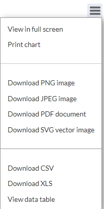

Using Highcharter in an Interactive and Static Quarto Report
Displaying interactive and static charts in different quarto report formats: .html, .pdf, and docx (word document)
data visualisation
data analysis
r
quarto
code
Author
Eli Nimy
Published
February 17, 2024
Generating reports with Highcharter charts in R can pose challenges when the output format needs to be in .pdf or .docx. However, there’s a straightforward workaround available. You can download the chart and then paste it into either a PowerPoint or Word document. If needed, you can convert the document to a .pdf format afterward.
To enable downloading options, you can use the hc_exporting(...) function:
The highcharter_chart_object represents a highcharter chart.
Download options provided by enabling exporting:

In this post, we will explore another workaround using the webshot2 and htmlwidgets packages. This method enables you to work exclusively within R without the need to download or take screenshots of charts for pasting into other documents.
Highcharter will be used to create an interactive chart
install.packages("highcharter")
Htmlwidgets will used to save the interactive chart to an .html file
install.packages("htmlwidgets")
Webshot2 will be used to take a screenshot of the saved interactive chart (.html file). The screenshot can be saved as an .png, .jpeg, or .pdf.
install.packages("webshot2")
0.2 Dataset
The line chart generated using Highcharter, showcased in the reports within the subsequent sections, provides insights derived from the vaccines dataset.
Format - A data frame with 3,876 observations and 3 variables.
year- year
state - name of the state
count - number of cases per 100,000 people. If the value is NA the count was 0
View vaccines dataset
library(highcharter)vaccines
# A tibble: 3,876 × 3
year state count
<int> <chr> <dbl>
1 1928 Alabama 335.
2 1928 Alaska NA
3 1928 Arizona 201.
4 1928 Arkansas 482.
5 1928 California 69.2
6 1928 Colorado 207.
7 1928 Connecticut 635.
8 1928 Delaware 256.
9 1928 District Of Columbia 536.
10 1928 Florida 120.
# ℹ 3,866 more rows
0.3 .pdf Quarto Report
The following code produces a .pdf report, accomplished by setting the output format to PDF using format: pdf. The delay argument specifies the time to wait before taking a screenshot, in seconds. It is advisable to set a longer delay to ensure all assets display properly.
Note
To generate a PDF format report, a LaTeX installation is necessary. To ensure smooth output of a .pdf report, please install TinyTeX by executing the following command in your Terminal: